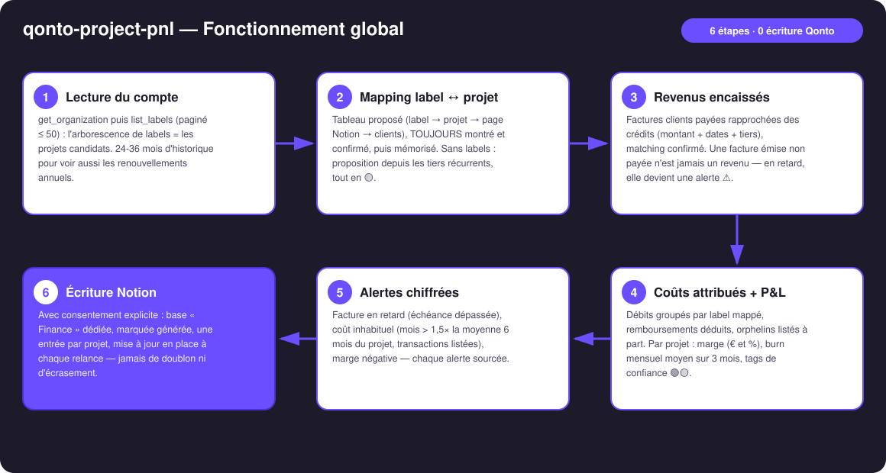
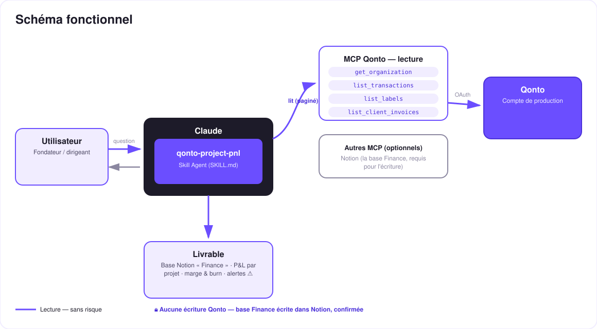

La doc projet raconte enfin la vérité économique — le P&L par projet, vivant, dans Notion.
Les studios, agences et indie hackers pilotent leurs projets dans Notion : la doc est belle, les specs sont à jour… mais la rentabilité par projet reste un mystère. Les revenus sont à la banque, les coûts aussi — et la doc n'en sait rien. Le skill referme la boucle :
Uniquement l'encaissé : factures payées rapprochées des virements entrants (matching confirmé), rattachées à leur projet.
Labels Qonto ↔ projets, mapping confirmé puis mémorisé ; remboursements déduits, scan 24-36 mois (renouvellements annuels).
Par projet : marge en € et en %, burn moyen des 3 derniers mois, tags de confiance 🟢🟡.
Base « Finance » dédiée, une entrée par projet, mise à jour à chaque exécution — alertes ⚠️ facture en retard · coût inhabituel.
| Prérequis | Détail | Obligatoire |
|---|---|---|
| Compte Qonto production | Le skill s'adapte à toute organisation — get_organization d'abord, zéro donnée en dur | ✅ |
| Pays | Universel — labels + factures + transactions, aucune règle fiscale : tous les pays Qonto (FR, DE, ES, IT, AT, NL, BE, PT) à l'identique | ℹ️ détecté |
| MCP Qonto connecté | Connecteur officiel (claude.ai / Claude Desktop), login OAuth | ✅ |
| Connecteur Notion | Le connecteur officiel — requis pour l'écriture de la base Finance. Sans lui : mode dégradé propre (tableaux + dashboard HTML) | ⭕ recommandé |
| Labels Qonto par projet | La dimension « projet » du compte. Sans labels : mapping proposé depuis les tiers récurrents, tout en 🟡 | ⭕ recommandé |
| Factures clients dans Qonto | Pour les revenus encaissés et les alertes de retard. Sans : repli sur les crédits labellisés (🟡) | ⭕ |

emitted_at vs settled_at), remboursements déduits, pagination ≤ 50 partout, list_cash_flow_categories jamais appelé (403 sur le connecteur claude.ai)
Zéro écriture Qonto — aucun argent ne bouge, nulle part. L'unique écriture vit côté Notion : elle exige le consentement explicite dans la conversation, ne touche que la base dédiée marquée comme générée, et ne modifie jamais un contenu Notion existant. Relance = mise à jour en place, jamais de doublon.
| Propriété | Contenu | Exemple (inventé) |
|---|---|---|
| Projet | Nom du projet — la clé de mise à jour idempotente | Aurora |
| Revenus encaissés | Somme des factures payées rapprochées des transactions | 18 400 € |
| Coûts attribués | Débits labellisés, remboursements déduits | 7 150 € |
| Marge | € et % | 11 250 € · 61 % |
| Burn mensuel | Moyenne des 3 derniers mois pleins | 2 380 €/mois |
| Alertes | ⚠️ en clair, chiffrées et sourcées | ⚠️ 1 facture en retard (INV-2026-042, J+12) |
| Période · Mise à jour | Fenêtre couverte · horodatage de la dernière exécution | 2024-08 → 2026-07 · il y a 1 min |
qonto-project-burn vs qonto-project-pnl| qonto-project-burn | qonto-project-pnl (ce skill) | |
|---|---|---|
| La question | « On tient le budget ? » | « Ce projet gagne-t-il de l'argent ? » |
| Périmètre | Coûts vs budget déclaré, date de dépassement projetée | Revenus ET coûts → marge, burn |
| Destination | Linear / Jira — l'équipe produit | Notion — la doc projet |
| Alertes | Seuils budget (80 % / 100 %) | Facture en retard, coût inhabituel, marge négative |
Les deux se complètent ; pour la vue entreprise (runway, cockpit tous coûts), voir qonto-ceo-cockpit.
| Sortie | Format | Quand |
|---|---|---|
| Réponse dans la conversation | Tableaux markdown (P&L par projet, alertes, orphelins) | Toujours — c'est la base |
| Base « Finance » dans Notion | Base dédiée « Finance — P&L (générée) », une entrée par projet, mise à jour à chaque exécution | Si le connecteur Notion est présent + consentement explicite |
| Dashboard interactif | Fichier/artifact HTML : barres revenus vs coûts, badge de marge, burn, marqueurs d'alertes | Si l'hôte affiche les fichiers ; repli automatique sur les tableaux |
La démo ≤ 3 min jointe à la PR suit le storyboard : le mystère de la rentabilité → mapping confirmé → P&L calculé → la page projet Notion qui affiche « mise à jour il y a 1 min » → relance idempotente. Tous les chiffres à l'écran sont des données de démo inventées. Le script détaillé de tournage est conservé en interne (hors dépôt).
| Idée | Effort | Note |
|---|---|---|
| Historique mensuel par projet (une sous-table par entrée) | Moyen | La base Finance gagne une dimension temps |
Devis en cours (list_quotes) en colonne « pipeline » | Faible | Revenus signés vs encaissés, sans jamais les confondre |
| Relance des factures en retard détectées | Faible | Passer la main à qonto-invoice-chaser |
| Taux horaire implicite (marge ÷ temps déclaré) | Moyen | Le temps resterait déclaratif — jamais inventé |